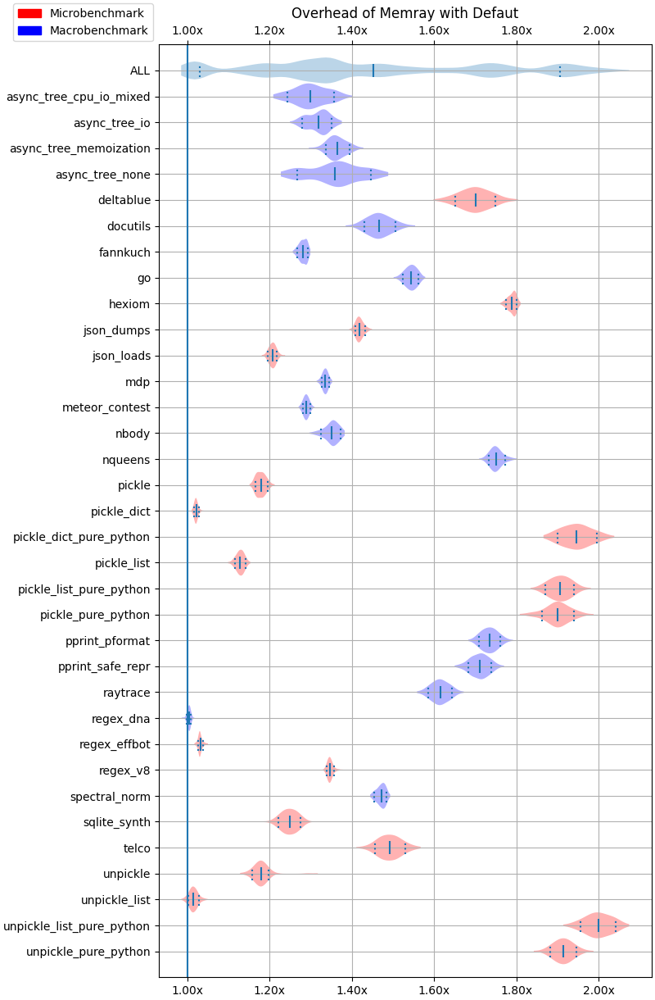

Performance#
This section contains an analysis of the overhead of running Memray over different test cases and configurations. All these test cases come from the official Python performance suite: pyperformance.
Every test is executed many times using the perf tool in a machine specifically tuned to obtain reproducible performance results. The machine uses isolated CPUs with fixed frequencies to run the benchmarks. You can read more about how the machine is tuned for benchmarks in the perf documentation about tuning a system.
These purpose of these results are to give you an idea of the overhead of running Memray with different options. Of course, these results will vary from machine to machine but they can give you an approximation of what to expect.
Test system#
OS: Arch Linux x86_64
Kernel: 6.1.2-arch1-1
Memory: 64GB (8x8GB) DDR4/3200mhz Quad Channel Memory
Disk: 512GB (1x512GB) Intel 760p M.2 PCIe NVMe SSD - 3230MB/s Read & 1625MB/s Write
CPU: Intel(R) Core™ i9-9980XE Extreme Edition Processor
Python: 3.10.9 (LTO + PGO)
Memray version: 1.5.0
Libunwind version: libunwind 1.6.2-2
Libz4 version: libz4 1.9.4-1
Libc version: glibc 2.36-6
Compiler version: gcc 12.2.0-1
System state#
CPU: use 2 logical CPUs: 17,35
Perf event: Maximum sample rate: 1 per second
ASLR: Full randomization
Linux scheduler: Isolated CPUs (2/36): 17,35
Linux scheduler: RCU disabled on CPUs (2/36): 17,35
CPU Frequency: 0-16,18-34=min=1200 MHz, max=3000 MHz; 17,35=min=max=3000 MHz
CPU scaling governor (intel_pstate): performance
Turbo Boost (intel_pstate): Turbo Boost disabled
IRQ affinity: Default IRQ affinity: CPU 0-16,18-34
Source of the overhead#
The overhead of running Memray comes from two places:
A Python profile function implemented in C++. This function is called every time a Python function is called or returns and is used to register the function calls so Memray can reconstruct the stack trace of every allocation. Although the overhead is very, very small, it adds up. This means that the more your application calls Python functions the bigger the overhead will be.
The allocation registering code. This is the main source of the overhead. Every time your application makes a memory allocation or deallocation, Memray needs to register it. This means that the more frequently your application allocates memory, the bigger the overhead will be. Tracking Python allocators will greatly increase this overhead because the Python allocator is used for small, short lived objects which means that it’s generally called with very high frequency.
Results#
The following plots show the overhead of running Memray over different test cases using violin plots. Each row corresponds to the result of a given test. For a given row, the continuos vertical line in the middle corresponds to the mean while the two dashed vertical vars at the left and right of the mean correspond to the 10% and 90% quantiles. The shaded area represents the distribution of the data, with thicker areas indicating a higher density of data points. The ALL row corresponds to the distribution of all the results across all the benchmarks combined.
Default options#
The following results correspond to running Memray with the default options.
Python allocators#
The following results correspond to running Memray with --trace-python-allocators.
Native traces#
The following results correspond to running Memray with --native.
Python allocators + Native traces#
The following results correspond to running Memray with --native --trace-python-allocators.